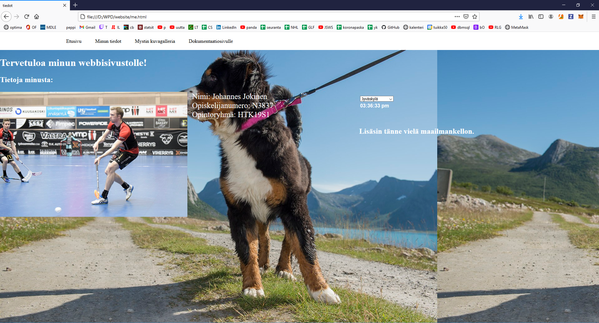

Reflektio
Tällä sivulla arvioin omaa työskentelyäni projektin aikana; mitä opin, missä asioissa onnistuin ja mitkä osa
-alueet vaativat vielä kehittämistä. Sivu on jaettu neljään pääosioon, jotka ovat: tekniikka, scrum masterina toiminen, projektityöskentely ja koodarina kehittyminen.
Jokaisen osion alle olen valinnut mielestäni oleellisimmat asiat, joita olen reflektoinut tarkemmin.
Tekniikka
Tekniikan suhteen oppimistavoitteeni projektin suhteen olivat suhteellisen yksinkertaiset. Käytännössä laitoin ylös vain kolme asiaa; Oppia käyttämään paremmin
Angularia, oppia ja ymmärtää täysin miten frontend ja backend saadaan toimimaan kunnolla keskenään, sekä oppia miten backend yhdistetään tietokantaan
Angular
Angularin suhteen voin sanoa oppimistavoitteen täyttyneen, ja jopa ylittyneen. Projektin alkupuolella kun teimme yhdessä hommia toisen koodarin kanssa,
oma rooli oli aika pitkälti vain katsella koodin kirjoittamista, ja ideoida toteutustapaa, ja katsoa virheitä, sillä tasoero angularin osaamisen suhteen oli
huomattava. Muutaman viikon jälkeen kuitenkin alkoi osaaminen olla jo sillä tasolla, että pystyi tuottamaan metodeja, ja sai niitä toimimaan vähintäänkin
pienen avustuksen voimalla. Projektin loppua kohden kuitenkin osasi jo rakentaa täysin toimivan ja valmiin komponentin, jota voi käyttää valmiissa sovelluksessa.
Frontend + Backend
Tässä kohdassa on sanottava, että oppimistavoitteeseen ei aivan täysin päästy. Vaikka frontin ja backin yhdistäminen tuli tutuksi,
ja sitä onnistuneesti teinkin, niin vielä tarvitsee aika tarkan toimivan mallin ennen kuin lähtee uudessa sovelluksessa yhdistämään näitä toisiinsa.
Kyseessä ei ole mikään liian monimutkainen prosessi, mutta en ole tyytyväinen siihe jos saan jotain toimimaan kopioimalla koodinpätkää siinä tapauksessa,
kun en täysin ymmärrä mitä kautta osaset löytävät toisensa. Opin siis asian puoliksi, eli osaan kyllä laittaa frontista tietokantoihin asti muutoksia, jos
asia on tehty jossain toisessa komponentissa, mutta en tiedä mikä osa laittaa sen toimimaan. Toisaalta tämä on sellainen asia, minkä saa selville kysymällä,
joten ehkä pitäisi jatkossa olla vähän aktiivisempi asioiden suhteen, jotka haluaa oppia kunnolla.
Backend + Tietokannat
Mielestäni opin ymmärtämään backendin ja tietokantojen suhdetta paljon paremmin, mitä olin aiemmin osannut. Tein töitä backendissa Sequelizen kanssa,
ja se oli hyvä ja selkeä valinta tietokantojen käsittelyyn, koska Sequelize helpotti ja selkeytti tietojen käsittelyä tietokannoissa.
Mallien ja controllereiden kirjoittaminen oli alun selvittelyn jälkeen suhteellisen helppoa,
nämä olivat asioita joita halusin oppia, ja selkeää kehittymistä molempien suhteen on havaittavissa.
Scrum Master
Päädyin Scrum Masterin rooliin vähän vahingossa, en ole ikinä
ajatellut ryhmän seremonioiden vetämistä itselleni luontaisena roolina projektissa.
Acorn kuitenki etsi koodaria, joka voisi lähteä myös SM-hommiin, joten hetken
mietittyäni myönnyin ottamaan roolin itselleni. Lopulta päädyimme kahden
Scrum Masterin tiimiksi, ja oma osuus oli vetää jälkimmäinen puolisko projektista.
Osaanko olla rikkomatta asioita
Koen päässeeni alkuun todella paljon helpommalla, jos vertaa siihen,
että olisi aloittanut projektin alkupuoliskolla. Edellinen SM sai hiottua kokousten
tyylin todella sujuvaksi, ja käytännössä kaikissa kokouksissa oli jo siinä
vaiheessa laadukas toteutustapa, joten minun ei tarvinnut hirveästi miettiä kokousten sisältöä,
pitää vain huoli siitä, että asiat käydään läpi nopeasti ja laadukkaasti.
Kun lähtee korjaamaan asiaa joka ei ole rikki,
niin on hyvinkin helppoa saada kyseinen asia hajalle. Alussa mietin jonkin verran, että onko siinä mitään järkeä hypätä SM-rooliin,
jos asiat rullaavat näin hyvin. Onneksi lopulta en tehnyt asiasta mitään numeroa, vaan yritin jatkaa samalla linjalla mihin ryhmä on tottunut,
ja mielestäni homma toimi aika samalla tavalla kuin ennenkin.
Muutokset ajan säästämiseksi
Aikana jolloin aloitin roolissani, kaikilla projektissa oli viikossa paljon ryhmän sisäisiä,
ja ulkoisia kokouksia, joten omien kokoustemme nopeuttamiseksi sovimme,
että edellinen SM hoitaa sihteerin roolin ja itse pääsen keskittymään pääosin
kokousten vetämiseen. Tämä johti kokousten ajan lyhenemiseen, josta kaikki ryhmän
jäsenet ovat antaneet positiivista palautetta. Luonnollisesti pääsin myös kirjoittamaan raportteja välillä, viikottain viikkoraportin,
ja sihteerin pois ollessa kaikki muutkin raportit. Toinen asia mitä muutin viikkopalaverin, ja oman työskentelyn nopeuttamiseksi oli
työtuntien kerääminen google formssin avulla. Tämä säästi hieman aikaa viikkopalavereissa kaikilta, mutta aiemmin olin joutunut kyselemään
tunnit jokaiselta erikseen, laskemaan ne yhteen ja kirjaamaan viikkoraporttiin. Forms-kyselyssä kysyin myös ihmisten aikataulutoiveita seuraavista
kokouksista, sekä muita ajankohtaisia asioita, mitä tarvitsi raporttien täyttämiseen, tai aikataulujen luomiseen. Tämä oli mielestäni omaa työskentelyä
paljon helpottanut muutos.
Yhteenveto - Scrum
Yhteenvetona SM-hommista voisi sanoa, että omat lähtökohdat
rooliin olivat täydelliset edellisen SM:n jäljiltä ja siihen lisäksi todella hyvin
toimiva ryhmä, niin ei ollut missään vaiheessa oikeastaan edes isompia vaikeuksia hoitaa asioita. Ja jos meinasi alussa
unohtaa käydä jonkin asian läpi, tai tehdä muun virheen, niin joku vain muistutti asiasta,
ja elämä jatkui, eikä tässä ryhmässä lähdetty tekemään isoa numeroa ihmisten virheistä. Koen että hoidin oman ruutuni hyvin, vaikka
todennäköisesti myös joissain asioissa jäi myös parannettavaa. Esimerkiksi joskus Dailyt saattoivat venähtää, jos keskustelu lähti vähän ohi aiheen,
työelämässä sellaisissa tilanteissa pitäisi pystyä pitämään aiheet asiallisina.
Projektityöskentely ja yleinen kehittyminen
Acorn oli ensimmäinen kerta, kun työskentelen missään projektissa. Projektin aikana tuli opittua iso määrä uusia asioita, miten koodaaminen ryhmässä
toimii, ja kuinka suunnitella ja toteuttaa ryhmän kesken toimiva sovellus. Sovelluskehitys on alana ainutlaatuinen,
tässä lähdetään työstämään tyhjään tiedostoon tekstiä, ja lopputuote voi olla ihan mitä ikinä pystyy ihminen vaan visioimaan. Lopputuloksen voi tuottaa
miljoonalla eri tavalla, ja silti projektissa pitää sopia kaikesta mahdollisesta alusta loppuun, että miten asiat halutaan toteuttaa.
Yksi tärkeimmistä asioista mitä tuli opittua tämän projektin aikana on se, miten vision tuottaminen lopullliseksi sovellukseksi kokonaisuudessaan toimii.
Acorn - Oppiva Organisaatio
Kun on ensimmäistä kertaa projektissa mukana josta ei tunne ketään, voi olla vaikeaa lähteä työskentelemään käytännössä tuntemattomien ihmisten kanssa.
Varsinkin jos omiin vahvuuksiin ei kuulu uusiin ihmisiin tutustuminen. Omalla kohdalla alku olikin vaikea, ei oikein ollut mitään hajua mitä pitäisi tehdä,
keltä kannattaisi kysyä, ja miten tästä selvitään hengissä. Omaksi onneksi ryhmän muut jäsenet olivat aina helposti lähestyttävissä, ja valmiita auttamaan kaikessa,
vaikka heilläkään ei olisi tietoa kyseisestä asiasta. Jos vertaa omaa tekemistä ryhmässä siihen mitä se oli alussa, ja tällä hetkellä, on huomattavissa erittäin iso muutos
oikeaan suuntaan. Alkupuolella en juuri poistunut omasta työhuoneesta, jos ei ollut pakko, mutta loppuvaiheessa saattoi mennä spekuloimaan jonkun muun huoneeseen
ongelmasta, josta ei välttämättä tiennyt mitään, mutta vähintään tarjoamaan henkistä tukea. Sitä mukaan kun tämä efekti kasvoi ryhmän sisällä, hommat alkoivat muuttua
helpommiksi ja hauskemmiksi. Tästä opin sen, että kun työskentelee hyvässä ryhmässä, niin hyvä kommunikaatio on avain optimaaliseen ryhmän toimimiseen.
Projektin aikana huomasi sen, että yksilön toiminnalla voi olla ryhmän toimintatapoihin todella hyvät positiiviset vaikutukset. Kun yksi ihminen uskaltautuu
hyppimään muiden työhuoneisiin jakamaan neuvoa, se luo positiivista henkeä, jota kautta hyviä asioita alkaa tapahtumaan. Varsinkin oman ryhmän toiminnassa
huomasi sen, että yksittäisen henkilön ideat ja ajatukset otettiin aina ryhmän sisällä aidosti huomioon, ja muutoksia tehtiin tarvittaessa. Alussa tuntui että
ihmiset eivät tunne toisiaan, joten lanseerattiin #korvapuustiistai joka on käytössä niin pitkään kun tällä ryhmällä projektia tehdään.
Kun joku sanoi ääneen, että Daily Scrum keskeyttää ikävästi päivän jos se alkaa klo 10:00, aika vaihdettiin ruokailun jälkeen klo 12:00. Kun tämäkin aika todettiin
huonoksi, se vaihdettiin heti aamuun, joka on ollut kaikkien mielestä toimiva ajankohta. Tästä käy ilmi se, että muutokseen mukautuminen, ja toimintatapojen muuttaminen
tuottaa hyviä asioita. Kokeilemalla uusia juttuja löytää yleensä parhaiten toimivan toimintatavan, ja tämä on ollut tärkeä oppi.
Koodarina kehittyminen
Jos vertaa omaa tasoa koodin kirjoittamisessa projektin alussa nykyhetkeen, niin olen mielestäni mennyt todella paljon eteenpäin. Muutoksia on huomattavissa
itse koodaamisen lisäksi myös siinä, miten osaa hakea tietoa ja muokata sitä omaan koodiin. Ehkä isoin ero puolen vuoden taakse on se, että vaikka siinäkin
vaiheessa sain kyllä koodin useimmiten toimimaan, niin tällä hetkellä yleensä ymmärtää myös sen, miksi se koodinpätkä toimii.
Tämä helpottaa huomattavasti virheiden etsimisessä ja korjaamisessa, mikä taas nopeuttaa työskentelyä.
Mielestäni paras tapa arvioida kehittymistä on vertailla nykyistä tuotosta koodailusta aikaisempaan tuotokseen. Laitoin alapuolelle kuvan nettisivusta,
joka on edelliseltä kerralta kun koodasin nettisivut loppuvuodesta 2019.

Tähän sivustoon jos vertaa, niin omasta mielestä eteenpäin on menty.